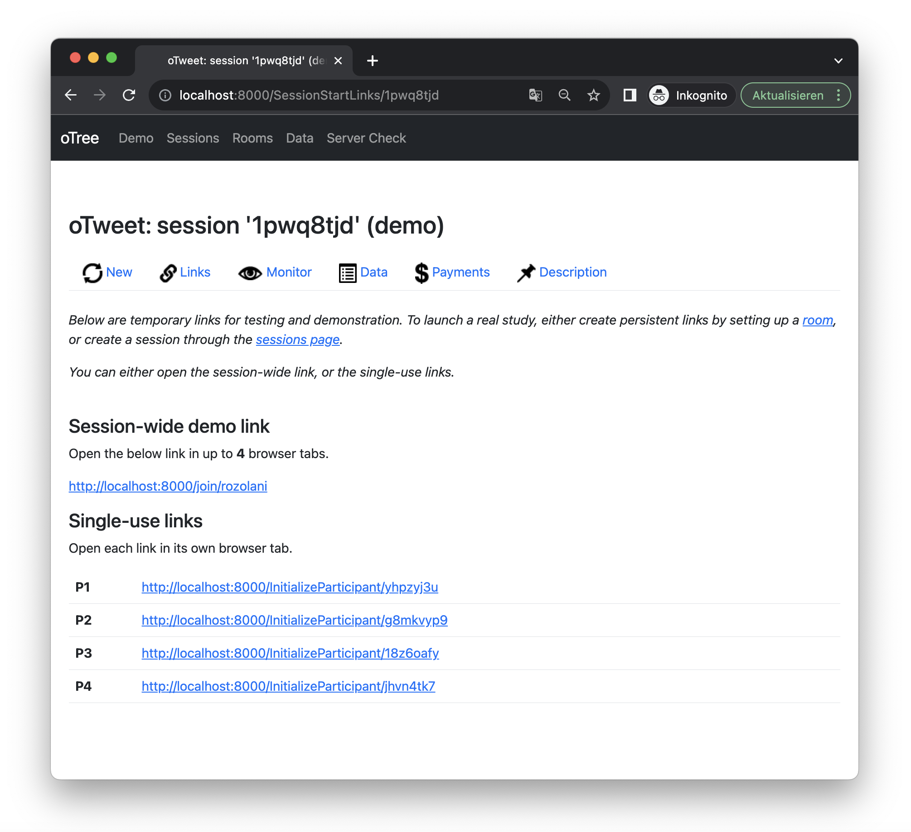

pip3 install -U otree1 Deploy oFeeds
If you want to edit, test and run oFeed’s code locally, you’ll need to install oTree. If you just want want to deploy it on a server, you can skip the first sections and start with Section 1.3 of this chapter.
This guide instructs you how to deploy one of the oFeeds apps either locally or on a server and how to connect that server to a prolific study. It does not introduce you to oTree per se. If you are interested in creating your own oTree apps, I recommend oTree’s official documentation.
1.1 Run oTree
1.1.1 Prerequisites
To run oTree, you need Python3 (and its package manager PIP). In addition, you’ll need some basic experience with command line tools (your terminal) as well as an IDE such as PyCharm.
1.1.2 Install oTree
Open your command line tool, that is, the terminal (Mac/Linux) or command prompt (Windows PowerShell) and type:
After the command ends, the installation is complete.
1.1.3 Download, Unzip & Edit oFeeds
Download the .otreezip file of the application you are interested in (that is, oCom, oNovitas, oTweet) from GitHub or OSF. Open your command line tool and navigate (cd) to your desired directory. Within that directory, unpack the otreezip file you just downloaded (e.g., oTweet.otreezip) using the following command:
otree unzip oTweet.otreezipThis upacks the python project which contains predominantly Python code but also some JavaScript, HTML and CSS. You can edit it in your favorite IDE (such as PyCharm). I advice you to consult the oTree documentation if you want to edit the app’s backend as well as the Bootstrap 5.2 documentation if you want to edit the frontend. In addition, the subsequent chapters describe oFeeds’ apps in more detail.
After editing your code, use your command line tool, navigate to the project directory (where also a settings.py file is located) and run the following command to re-pack the project into the *.otreezip file again:
otree zipYou will need this otreezip file to deploy the project on a server.
1.2 Deploy oFeeds Locally
Use your command line tool, navigate to your project folder and run:
otree devserverOpen a browser to http://localhost:8000/. This will display a Demo screen with a hyperlink named after the app you intend to use, e.g., oTweet. Click on it to create a small demo session:
 The screenshot above shows such a session (with the unique id 1pwq8tjd). You can see unique ULRs fornfour participants (P1-P4) as well as some horizontally distributed tabs. The Data tab is of particular interest as it shows you the data entries of each participant. It also allows you to download a corresponding *.csv file.
To quit the development setup (devserver), go to the command line tool and press Control+C. Note that oTree’s devserver is not designed for running actual studies.
1.3 Deploy oFeeds on a Server
To increase the ease of deployment, oTree’s basic server setup is tied to Heroku. oTree’s official documentation explains that:
Heroku is a commercial cloud hosting provider. It is the simplest way to deploy oTree. The Heroku free plan is sufficient for testing your app, but once you are ready to launch a study, you should upgrade to a paid server, which can handle more traffic. However, Heroku is quite inexpensive, because you only pay for the time you actually use it. If you run a study for only 1 day, you can turn off your dynos and addons, and then you only pay 1/30 of the monthly cost. Often this means you can run a study for just a few dollars.
This implies that you need to set up a Heroku account. In addition, you’ll need a oTree Hub account. oTree Hub automates your server setup and ensures your server is correctly configured. It also offers error/performance monitoring. Just start with the cheapest account and see how far it gets you.
The following steps will guide you through the process. You can and probably should also watch this video to get you started.
- Visit Heroku and create an account
- Visit oTree Hub and create an account.
- On oTree Hub, click on Heroku server deployment.
- Click on Connect to Heroku.
- This will navigate you to a Heroku login interface. Log in to proceed.
- This will redirect you to oTree Hub and ask you to verify your Heroku account by providing credit card details. Do that (on Heroku) to proceed.
- Next, visit your Heroku Dashboard and create a new app. Tipp: Use a rather generic name that you can reuse for future (and potentially unrelated) studies.
- Go back to oTree Hub, click Heroku in the navigation bar. You should see the Heroku app you just created beneath Other Sites. Click on register right next to it.
- Your Heroku app should now be displayed as an Active Site. Click on Deploy.
- This will direct you to an interface where you can upload your
*.otreezipfile. Click on Browse to do so. If you haven’t done so already, you can download the*.otreezipfile of the application you are interested in (that is, oCom, oNovitas, oTweet) from GitHub or OSF. - Click Upload and wait for up to a few minutes.
- Click Configure to set up your data base.
- For testing purposes, choose the smallest
Postgres plan(mini) as well as the smallestDyno size(Eco), open accessOTREE_AUTH_LEVELandOTREE_PRODUCTIONoff (to display error messages etc.). Submit changes. You can verify, change and undo these settings on Heroku: visit your app and click on resources. This will also show you the estimates monthly costs of deployment. To run a study, choose different settings, i.e., a largerPostgres plan, largerDyno sizeandOTREE_PRODUCTIONon. - Click Reset database. Be aware that this will delete all the data you may have collected in a previous study.
- Click on the link provided in the upper third of the page, that is,
https://[your app name].herokuapp.com. This will yield the same interface as if you tested the study locally on a devserver (described in Section 1.2 of this chapter). - Done. You can now create and configure sessions to distribute the study to participants.
The following chapters will describe how to do that for each app individually. (The apps differ slightly with respect to their features, for instance, because the news feed can display two banner ads, while the other can only display one. For that reason, the apps’ configurations differ too.)